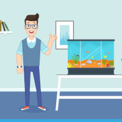
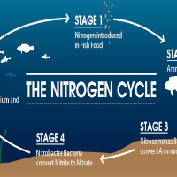

Home Aquarium Guides
-
 Read more
Read moreBasics
Hopefully the information you gain from reading this website will help your fish live longer, healthier, and happier lives!
-

Read more
Setting up your Aquarium
Preparation is important so that you don't cause excess stress on your fish or introduce diseases, and chemicals.
-

Read more
Cicling your aquarium
This is a complete guide to provide you all the information you require to safely cycle a freshwater tank.
-
Read more
Adding fish
Moving into a new aquarium tank can be stressful for a fish. Here are some tips on how to make a painless transfer.
-
 Read more
Read moreAquarium maintenance
Knowing when and how to clean a fish tank is a fundamental skill for any aquarist.
-
Read more
More articles
Here you can read all guides, easy-to-follow, and informational articles about fish and aquariums..